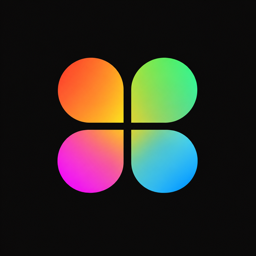
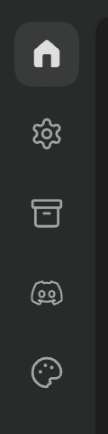

Theme Injector for FreebuffThemes in Freebuff, from one switch.
Turn it on and the theme icon appears in Freebuff’s sidebar.
Themes in Freebuff
Checking Freebuff…
Where to find it
- Turn the switch on. Your Freebuff desktop app will restart.
- Then in the sidebar you can find the theme icon.
